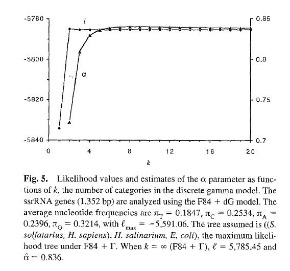

module_04.Rmd| tle: Research And Teaching With RevBayes |
| tput: |
| revealjs::revealjs_presentation |
Research And Teaching With RevBayes
Overview
- Introduction to graphical modeling
- How graphical modeling makes phylogenetic estimation more flexible
The Graphical Modeling Framework
- What is a model?
- A model uses mathematics to describe a process, or the behavior of a system
- Important facets of the generating process of the data are written down as parameters
The Graphical Modeling Framework
- What is a model?
- A model uses mathematics to describe a process, or the behavior of a system
Important facets of the generating process of the data are written down as parameters
A graphical model represents the relationships and dependencies between model paramters
A simple case
- It’s easy to describe a model where we are manipulating one parameter
- But we rarely have such a simple case when we’re analysing biological data
A not so simple case
- It’s easy to describe a model where we are manipulating one parameter
- But we rarely have such a simple case when we’re analysing biological data
- We’re describing the mechanisms that generated our observed data
- In the case of a tree, this is the process of molecular or morphological evolution
A not so simple case
- This is where graphical models come in
- A graphical model represents the joint probability distribution as a graph
A not so simple case
- This is where graphical models come in
- A graphical model represents the joint probability distribution as a graph
- Nodes are variables. Edges represent dependencies between nodes.
A not so simple case
- This is where graphical models come in
- A graphical model represents the joint probability distribution as a graph
- Nodes are variables. Edges represent dependencies between nodes.
A not so simple case
- This is where graphical models come in
- A graphical model represents the joint probability distribution as a graph
-
Nodes are variables. Edges represent dependencies between nodes.

A not so simple case
- This is where graphical models come in
- A graphical model represents the joint probability distribution as a graph
-
Nodes are variables. Edges represent dependencies between nodes.
Pr( data | model )

Phylogenetical Complexity
- This is where graphical models come in
- A graphical model represents the joint probability distribution as a graph
-
Nodes are variables. Edges represent dependencies between nodes.


Who cares about graphical modeling?
I’m going to make the case that this framework enables radical transparency in both research and pedagogy.
Engaging with underlying assumptions
- Most phylogenetic estimations treat among-site rate variation as Gamma-distributed
- Not every site in a nucleotide alignment evolves at the same rate
- Not every character in a morphological dataset evolves at the same rate
Engaging with underlying assumptions

Yang1994
Yang (1994) demonstrated that modeling ASRV as Gamma distributed with 4 Gamma categories is sufficient

Engaging with underlying assumptions
Ants5
- We typically don’t collect invarient characters!
- Wagner (2009) and Harisson and Larson (2016) have argued that the Gamma is not appropriate for ASRV in morphological data, and we should use a lognormal
Engaging with underlying assumptions
- In previous iterations of software, you might have to email a developer and ask them to implement something
- RevBayes’ graphical model framework emphasizes flexibility. We can simply plug in another ASRV distribution.
Engaging with underlying assumptions
- Maybe there is an effect here
- Dan will show us some better ways of looking at posterior samples
- But, the larger point is that flexibility enabled by modularity means that we were able to immediately implement a model we were interested in
Transparency and documentation
It wouldn’t be unfair to say there are some things about RevBayes that are more complex than other phylogenetic softwares
Transparency and documentation

tutorials
Each one is available as a markdown file on the website repository